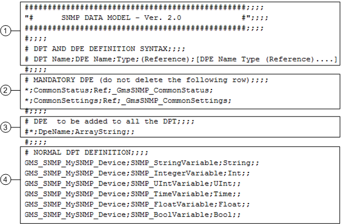

SNMP Data Model
To configure the SNMP object models, you must define new Data Point Types by editing the SNMP data model CSV file (textual file containing comma separated values). For instructions, see Prepare a CSV Data Model File for the Custom SNMP Device.

When editing the CSV file, follow the exact naming conventions indicated in the examples below, punctuation marks included. For example, if any semicolon is missing, the import will not work. The DPT line must always end with two semicolons (;;).
Example of SNMP Data Model

| Description |
1 | Template section available to enter the name of the data model (freely writeable within the # lines) and specify the syntax definition for Data Point Type (DPT) and Data Point Element (DPE or properties). |
2 | Mandatory DPE(s). The Data Point Elements listed in the following two lines and starting with an asterisk (*) must always be present in the SNMP data model file (CSV) to import.
These are essential DPEs required for SNMP to work correctly. Once the data model is imported, these DPEs will display in the Models & Functions tab in the Primary pane as properties:
|
3 | DPE to add to all Data Point Types. If the SNMP device expects one or multiple common DPEs that belong to all the data points to create, these can be added at this line only. In this way you can avoid repetition of common DPEs in each DPT at the next section (DPT and DPE definition). |
4 | DPT and DPE definition. This is where you have to enter any DPT and DPE (specific for each DPT). NOTE: You can create multiple DPTs during the CSV import . It is enough that you enter any required DPT name in the CSV file. |
Syntax Definition
Once you open a CSV file, for each object model you want to create, you must specify both the DPT and DPE:
# DPT Name;DPE Name;Type;(Reference);[DPE Name Type (Reference) .... ]
Example
GMS_SNMP_MySNMP_Device;SNMP_Stringvariable;String;;
Data Point Type and Data Point Element Data | |
Data | Description |
DPT Name | Name of the DPT of the object model. NOTE: This must be a unique value in the database. |
DPE Name | Name of the DPE (property) associated to the object model. NOTE: This must be a unique value in the DPT (or internal structure). |
Type | Variable type (data type) assigned to the DPE. For details about the acceptable values, see Table Data Point Element Types, below. |
[DPE Name Type (Reference)] | Definition of the property (element) by name and type. |
- Example of DPT Name: GMS_SNMP_MySNMP_Device;
NOTE: For correct SNMP operation, it is important that the DPT name always starts with the prefix GMS_SNMP_. If this prefix if not used, the object model is imported, but Desigo CC cannot read and display SNMP data from the SNMP device. MySNMP_Device indicates the name of the SNMP device and can be freely defined (for example, you may want to name GMS_SNMP_PC_Monitoring). - Example of DPE Name: SNMP_StringVariable;
NOTE: Basically, in SNMP the DPE represents the SNMP object (OID) to read. The name of the DPE can be freely defined. It may be helpful using a description that best indicates the use of a property or using the name of the SNMP object you will associate to this DPE (for example, PC_Name). - Example of DPE Type: String;;
NOTE: It indicates the variable type assigned to the DPE. Even though Desigo CC can handle many variables in the object models, only a limited subset of types matches the variables available for SNMP. See the following table.
Data Point Element Types | |
Variable Type Description | Variable Type Name to Use in the CSV File |
Unsigned Integer | Uint |
Integer | Int |
Double or Uint64 | Float |
Boolean | Bool |
Bit Pattern | Bit |
Text | String |
Data-Time | Time |